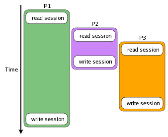
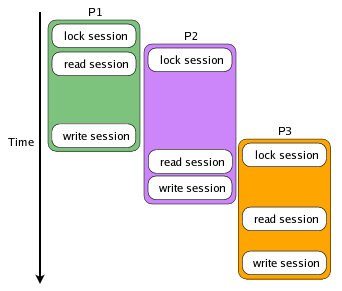
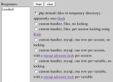

Race Conditions with Ajax and PHP Sessions
This one's been in the hopper for a long time. Back in February, I came across, through Ajaxian, Marc Wandschneider's "Troubles with Asynchronous Ajax Requests and PHP Sessions", and Harry Fuecks's 'AJAX and Session "Race Conditions"'. These are very interesting and well written articles about an often difficult to understand, debug, and combat problem: race conditions. The responses in the comments are all over the place, from claims to that this is how its supposed to be, to this isn't a problem with PHP it's a problem with HTTP being stateless, to PHP doesn't actually have this problem. The facts appear to be somewhat different. In general, everyone's right, at least a little bit. As with many problems of this type, particularities of each environment can render different results. One of the problem with race conditions is that it is often difficult to actually witness the ramifications of one when it happens, especially if you are not aware of it. If you've used PHP's built-in, default session handling (that uses files), you'll never come across the problem. However, things get interesting once you start using session_set_save_handler to write your own session handler.A Multi-processing but non-Threaded Environment
Ajax applications could logically be thought of as being (multi-)threaded, even though the environment (javascript on the client, your-favorite-language on the server) does not explicitly mention threads and multi-processing concepts (like critical sections, shared variables, etc). Java has a synchronized keyword and statement that lets you define the critical sections; PHP, for example, like all raw CGI environments, does not. Even environments that maintain some kind of persistent state on the server sometimes try to avoid exposing the programmer to multi-processing constructs. The fact is, since multiple Ajax requests can be triggered asynchronously and thus be pending at the same time, many threads/processes may be executing on the client's behalf within the context of the server. Any production quality web server can handle multiple simultaneous requests (apache does so via a variety of methods), so this capability should be expected. In some respects, javascript could be considered a very simple form of cooperative multi-threading, with scheduling points being explicit in the way functions are called and events are processed. When an event is received, a thread is started to call all the event handling functions in the DOM tree during the bubbling and capturing phases. These kinds of threads end if the event is cancelled or when all handler functions have been called. In a real multi-processing system, these threads may have their execution interleaved; in javascript, each thread executes from beginning to end without implicit interruption or preemption. You have to explicitly yield to let the browser do other processing in many cases. The following code will make the browser completely unresponsive:
while (1) { }
because it never yields execution. If your code does not yield its execution, a single routine like the above can take over the entire CPU. When this happens, the browser may show a dialog saying that a script is taking a long time, and ask if you want to kill it; that is, if the browser is able to interrupt the script's execution. There is no direct way to yield execution in Javascript, but there is a round-about way to start a new thread, or yield the processor and continue processing your code later, by invoking an event.
In languages and run-times that support threads, you start a thread with a construct like the following (in perl):
sub work {
do_stuff;
}
my $thrid = threads->new(&work);
This code creates a new thread that starts with the work subroutine (which could of course be defined as an anonymous subroutine or closure, in-line). The work subroutine can go off and do pretty much whatever it wants at that point, independent of its parent thread.
As it says in the perlthrtut(1) man page,
There are times when you may find it useful to have a thread explicitly give up the CPU to another thread. You may be doing something processor-intensive and want to make sure that the user-interface thread gets called frequently. Regardless, there are times that you might want a thread to give up the processor.
Perl threading and Java provide a yield function that does just that (as do many other languages). Javascript provides no such functionality, but you can emulate it through the event model.
Consider the following javascript pseudo-code:
function coop() {
do_something;
do_something_else;
do_additional_stuff;
}
Pretty straight-forward. As written, calling the coop function will execute from beginning to end without interruption. This could be modified to the following semantically equivalent code:
function callfn(f) {
f();
}
function coop() {
do_something;
callfn(function() {
do_something_else;
callfn(function() {
do_additional_stuff;
});
});
}
Again, this would execute from beginning to end without interruption. But the callfn function could be changed to use setTimeout to fire off an event, effectively yielding execution to other threads, er, event handlers, within the contenxt of the browser. Say we change the definition of callfn to the following (and rename it to yield_timeslice):
function yield_timeslice(f) {
/* see the side bar "Browser Time Resolution" for why 11 is used here */
setTimeout(f, 11);
}
or the following:
function yield_timeslice(f) {
var xhr = new XMLHttpRequest;
xhr.open('GET', 'work.cgi?do-server-stuff');
xhr.onreadystatechange = function(s) {
if (s == 4) {
f();
}
};
xhr.send('');
}
Because of the delay in execution, this ends up being similar to a construct you might see in other languages that support cooperative multi-tasking (as an obscure example, take LambdaMOO's suspend() function):
function coop() { /* logical series of execution */
do_something;
yield_timeslice();
do_something_else;
yield_timeslice();
do_additional_stuff;
}
function coop() { /* code to physically implement the above */
do_something;
yield_timeslice(function(){
do_something_else;
yield_timeslice(function(){
do_additional_stuff;
});
});
}
While it may be useful in some specific corner cases, you are most likely not going to write your Ajax applications and routines to work like the above. The nested closure syntax gets really hairy and confusing at any sufficiently useful nesting depth (and you might run into some of those really nasty memory leak problems with excessive use). Plus, you can't use this method in a loop, where it would be most useful for long-running routines. The idea here is that, while it doesn't explicitly claim any kind of multi-processing support, multiple things can be happening at the same time and in an unpredictable order among different logical threads of execution. The client might be accepting input in a textbox, firing off requests to the server to fill in an auto-complete, the server might access a database and send back results. The onchange event handler, the server side code that finds and returns the results, and the javascript code that updates the document with the results all make up one logical thread. But because of their asynchronous processing, this single logical thread can be subjected to the same problems that real threaded environments have to deal with. Anyone who's implemented Ajax based auto-complete functionality and didn't take into account that individual responses can be returned in a different order or be delayed may have seen a race condition at work in their client side code.
Now that we've seen that the asynchronous nature of javascript leads to what amounts to multi-processing, and that multi-processing can be tied in with the server, let's move on to dealing with race conditions that can actually crop up on the server side, which is designed to be multi-processing.
The Default PHP Session Handler
The built-in PHP session handler is designed for use with a single web server, since it stores the session data on the local filesystem. Once you need to scale up to multiple web servers, another solution is necessary. Fortunately, for the developer who will roll their own PHP session handler, there's sample code on the session_set_save_handler documentation page, which, one would be led to believe, is pretty much how the built-in session handler is implemented. And it is, almost. What this sample code does not include is the fact that the built-in session handler uses the flock(2) system call (available as flock in PHP). This can be verified by using strace to list all the system calls being made by a process. Here's the important bit:
open("/var/lib/php/session/sess_XXXXXXXXXXXXXXXXXXXXXXXXXX", O_RDWR|O_CREAT, 0600) = 18
flock(18, LOCK_EX) = 0
fcntl64(18, F_SETFD, FD_CLOEXEC) = 0
fstat64(18, {st_mode=S_IFREG|0600, st_size=11, ...}) = 0
pread64(18, "count|i:17;", 11, 0) = 11
. . . .
pwrite64(18, "count|i:18;", 11, 0) = 11
close(18) = 0
This shows us a couple of things. PHP tries to open the file that will store the serialized session data, creating the file if necessary. Then it uses flock to obtain an exclusive lock on the file (if there was already a lock on the file using flock and you were watching strace's output live, there would be a pause before the result (0) of the flock call is printed). Once flock returns 0, PHP knows it has exclusive access to the contents of the session file (at least for all the other PHP processes that would access it), so then it reads it. In this case, this session contained one variable, count, set to the value 17. The PHP script executes, modifies the session variables in some way, in this case by adding one to count, and then writes the session back to the file. Note that PHP does not explicitly release the lock. It is exploiting a feature of flock that automatically releases locks when the file is closed.
So the read function in the sample session_set_save_handler code is missing a call to flock. Leaving out some of the complexities makes the code easy to understand, but unfortunately does not provide an accurate description of everything that needs to be done in a session handler. Whoever originally wrote that sample code most likely never intended someone to actually use it. Nevertheless, it is a good place to start from when implementing your own session handler, so many people do.
The problem arises, as is outlined in the cited articles above, when multiple requests can be made at the same time. The built-in PHP session handler handles maintaining exclusive access to the session data, so most simple, low-load (meaning one one web server) websites don't experience a problem. And even if you use your own session handler that doesn't implement any locking, the progress that the users makes through your site, downloading a page, viewing it, moving on to the next one, is so slow that contention for the session data is rarely, if ever, an issue. But then Ajax enters the picture.
Since Ajax calls are asynchronous, and a multi-processing web server, like Apache, can handle multiple requests at once, then the same session data may be in use by multiple threads of execution on the server at the same time. And even then, this may be hard to observe if your server-side code doesn't do any heavy processing and if Ajax requests return relatively quickly.
Observing the Race Condition
In order to investigate this problem more throughly, and actually put a face on it so it is easier to recognize and talk about, I wrote a little HTML form that talks to some PHP code using different session handling and locking methods. It is interactive, allowing the user to change which method is used to store and access session data, so the ramifications are observable in real-time. This application implements a simple producer-consumer model. There are two loops, one does an Ajax call to the server to the producer function, which increments a counter variable in the session. The other does an Ajax call to the consumer function on the server, which decrements the counter variable in the session. Some of the methods implement locking and some do not. When locking is not used, multiple requests (represented in these diagrams as processes P1, P2 and P3) access the session data without any consideration for the other processes and what state the session data might be in. The running time of the requests are indicated by the height of each process's colored area (the actual run times are unimportant, only the relative start times and durations).No matter how P2 and P3 change the session data, the only changes that will be reflected in the session are those that P1 made because they were written last. When locking is used, the process can start up, request a lock on the session data before it reads it, and then get a consistent read of the session once it acquires exclusive access to it. In this diagram, note all all reads occur after writes.  The process execution is interleaved, but access to the session data is serialized. The process is waiting for the lock to be released during the period between when the process requests the session lock and when the session is read. This means that your session data will remain consistent, but it also means that while processes P2 and P3 are waiting for their turn to acquire the lock, nothing is happening. This may not be that important if all of the requests change or write to the session data, but if P2 just needs to read the session data (perhaps to get a login identifier), it is being held up for no reason.The Demo App Interface
Along the left side of the race condition demo app, there's a text box that will show the results of the Ajax requests. The right side lists the different implementations of session handling code. These types are: - php default (files in temporary directory), uses flock
- the one you end up using if you don't use session_set_save_handler
- custom handler, files, no locking (session_files.php)
- based on the sample session_set_save_handler code in the PHP documentation. No locking.
- custom handler, files, per session locking using flock (session_fileslock.php)
- same as the above, but includes locking access to the entire session using flock
- custom handler, mysql, one row per session, no locking (session_mysql.php)
- the "standard" session handler one would write to store session data in a MySQL database. Each row stores the data for one session, the serialized session data is stored in a field of type text. No locking.
- custom handler, mysql, one row per session, with a mysql advisory lock per session (session_mysqlsesslock.php)
- same as the above, except before the session is read, a mysql advisory lock is acquired, and it released when the session is closed
- custom handler, mysql, one row per variable, no locking (session_mysqlpervar.php)
- stores the session data in MySQL, but uses one row per session variable, not a row for the entire session. No locking.
- custom handler, mysql, one row per variable, with a mysql advisory lock per variable (session_mysqlpervar.php)
- same as the above, but uses a MySQL advisory lock to allow independent, application controlled exclusive access to each session variable without locking the entire session
Resource Contention
Hitting the "start" button begins the loops (implemented as functions that use setTimeout to call themselves) that invoke the increment and decrement functions on the server. The functions on the server simulate "work" by randomly sleeping while they hold the lock on the session (or the specific session variable). The code is very simple:
$c = (isset($_SESSION['count']) ? intval($_SESSION['count']) : 0);
$c++;
print date('i:s').": incr $c (using ".$_REQUEST['sesstype'].")";
sleep(rand(1,2));
$_SESSION['count'] = $c;
It reads the count variable from the session, increments it, prints some status information (which is displayed back to the webpage, prefixed with the minute and second of the current time), simulates a random amount of "work", then assigns the new value back to the session. The script then ends.
Watch the output of using the different session handler functions carefully. The ideal situation is that the series of numbers shown should never skip. Every time it says "incr", the number should be one more than the previous line. Whenever it says "decr", it should be one less. When that doesn't happen, there is contention for the session data which causes inconsistent results. Note that switching between different handlers that use the same storage method may cause the exact numbers that show to be different. What should be consistent is how the values change, only by one, for each return result.
Here is a sample run using the mysql handler without locking:
starting with mysql 45:35: incr 4 (using mysql) 45:35: decr 2 (using mysql) 45:37: incr 3 (using mysql) 45:38: decr 2 (using mysql) 45:40: incr 3 (using mysql) 45:41: decr 1 (using mysql) 45:43: incr 2 (using mysql) 45:44: decr 0 (using mysql) 45:45: incr 3 (using mysql) 45:47: decr 2 (using mysql)Note how incr and decr operations are alternating, but the values are not. This is because the session data is read twice before it is written once. At 45:35, both the incr and decr requests read the session and see a value of 3. Incr then increments to 4, and decr decrements it to 2. Incr writes and closes its session, storing 4. Decr then writes and closes its session, storing 2. At 45:37, the next iteration of incr reads a 2 out of the session and increments it to 3. Keep in mind that the simulated "work" could take either one or two seconds, and this unpredictability makes the race condition much more evident. Here's a sample run when a method that uses locking is selected:
starting with fileslock 21:59: incr 1 (using fileslock) 22:00: decr 0 (using fileslock) 22:02: incr 1 (using fileslock) 22:04: decr 0 (using fileslock) 22:06: incr 1 (using fileslock) 22:09: incr 2 (using fileslock) 22:10: decr 1 (using fileslock) 22:12: incr 2 (using fileslock) 22:14: decr 1 (using fileslock) 22:16: incr 2 (using fileslock)Here, all the operations are consistent. When incrementing, the new value is always one more than the last one, and decrementing always results in a value one less than the last one. Notice the two incr operations in a row at 22:06 and 22:09. This is entirely possible and to be expected when tasks are interleaved. But this did not cause the state of the session to become inconsistent. The two incr calls in a row properly incremented the variable twice. No values were skipped. Admittedly, this is not a strict producer/consumer model application. The decr operation could very well decrement ("consume") to values less than zero if decr was called more often than incr. Modifying the code to have the decrement operation wait until the counter has been incremented (thereby producing a semaphore) is left as an exercise for the reader (this is a lot easier when the session implementation allows each session variable to be locked independently; we'll cover this in the next section).
Minimizing Lock Holding Time
For a while, Linux's SMP implementation used what was called the "Big Kernel Lock". Only one process could be executing kernel code at the same time. Locking the entire session is similar to this, as it only lets one process/request be handled at a time. Even if those processes would not manipulate each other's data or only need to read the session and not update it, only one thing could happen at a time. The asynchronous calls end up being serialized on the server as soon as they call session_start, since that is where a session lock is acquired -- the browser is still responsive, but processing is done serially. The default PHP session handler errs on the side of caution, even if your script only ever reads data from the session, it still locks it. This could negatively impact performance. A solution to this to reduce the amount of code over which a lock is held. Using the default session handler, locking is implicit and only the entire session can be locked. By writing our own session handler that operates on a per-variable basis, we can overcome this limitation and provide explicit locking functionality, giving the programmer greater control. Thankfully, through the use of PHP 5.1.6's Standard PHP Library, we can override the base functionality of the $_SESSION variable and replace it with an object that implements the same Array-like interface. That what the mysql-per-var session handler mentioned above does. This object, named ThreadSafeSessionArray (perhaps a misnomer, it could perhaps use a better name), implements the Countable, ArrayAccess, and Iterator interfaces, making it almost a drop-in replacement for your current session handler. It provides three additional functions to allow fine-grained control of session variable locking, acquire, release, and synchronize. You merely need to replace your call to session_start() with:require_once "session_mysqlpervar.php"; $_SESSION = new ThreadSafeSessionArray();Including this file and instantiating ThreadSafeSessionArray sets up the session environment by calling session_set_save_handler and session_start for you. You'll also need to create a table with the following definition:
CREATE TABLE `sessvar` ( `sesskey` varchar(32) NOT NULL default '', `lastused` timestamp NOT NULL, `varkey` varchar(40) NOT NULL default '', `varval` text, UNIQUE KEY `sesskey` (`sesskey`,`varkey`) )in your database (you may need to change the size of sesskey depending on how your session id is calculated), and set the constants DBHOST, DATABASE, DBUSER, and DBPASS (see the code for more info). The code that is invoked in the demo app for the mysqlpervarlock handler uses acquire and release to control exclusive access to just the count session variable:
$_SESSION->acquire('count');
$c = (isset($_SESSION['count']) ? intval($_SESSION['count']) : 0);
$c++;
print date('i:s').": incr $c (using ".$_REQUEST['sesstype'].")";
sleep(rand(1,2));
$_SESSION['count'] = $c;
$_SESSION->release('count');
The only difference between this code and the ones that do not lock in the demo app are the addition of the calls to $_SESSION->acquire('count') and $_SESSION->release('count'). You only need to lock a session variable if you are going to update or change it. It is recommended that you only hold a lock for the shortest time necessary. I split the code up into multiple lines (assignment to $c, incrementing $c and storing $c back into the session) to make it more obvious that the act of incrementing a variable is a non-atomic operation. Even the following code, given that $_SESSION['count'] contains an integer:
$_SESSION['count']++; # case 1 some_function(1, 2, $_SESSION['count']++); # case 2does a read operation, then the increment, then a write operation all in one PHP statement for case 1. For case 2, it does a read of $_SESSION['count'], then calls some_function (which could do any number of unknown things and take who-knows-how long!), then increments the session variable, finally writing it. There is a unpredictable amount of delay, albeit small, between these operations, so you would even want to wrap that single statement in calls to the locking functions:
$_SESSION->acquire('count');
$_SESSION['count']++;
$_SESSION->release('count');
The code between the acquire and release calls is called the critical section. The general case looks like:
$_SESSION->acquire( ... variable name ... ); ... critical section ... $_SESSION->release( ... variable name ... );If you have problems making sure your locks match up, you can use the $_SESSION->synchronize function to create a loop that will acquire and release the lock for the body of the loop:
foreach ($_SESSION->synchronize( ... variable name ... ) as $lock) {
if (!$lock) break;
... critical section ...
}
This has the advantage of placing all your locking related code physically close together, all the code related to the mutual exclusion of this critial section is immediately adjacent. This can be a big advantage when debugging critical sections that are large, contain numerous function calls, and/or relatively deep statement nesting. Of course, you shouldn't use the variable $lock within the critical section, doing so might cause the lock to be released inadvertently. You can use any variable name to hold the ThreadSafeSessionLock object during this loop. The disadvantage here is that it is easy to forget to include the if (!$lock) break statement, there by causing the loop to execute more than once.
An alternative to the above, which may be more explict in its intent, is the following for loop:
for ($_SESSION->acquire( ... variable name ... );
$_SESSION->locked( ... variable name ... );
$_SESSION->release( ... variable name ... )) {
... critical section ...
}
This has somewhat of a disadvantage in that the variable name needs to be repeated three times, the C-style for loop is pretty long, and it doesn't read very well.
The rc-decr-varlock.php file in the demo app uses acquire and release, and the rc-incr-varlock.php file uses ->synchronize. Any of the three styles can be used, they all effectively do the same thing. It's a matter of maintenance and taste.
Things to keep in mind that are just good programming practices when dealing with concurrent code and locking:- release a lock in the same function/scope that the lock was acquired. Using a foreach around $_SESSION->synchronized can help with this.
- make your critical sections as small as possible, do no more and no less in them than necessary.
Why is per-variable locking important?
Your server-side Ajax code should be made to execute as fast as possible, to do its thing and get out of the way. This leads to a more responsive user-interface. However, some Ajax related functionality, like perhaps a database search, could take a long time. Here are two quick (and dirty) files that might be used to implement this functionality (for various reasons, we want to record the results of the last search the user did in the session, maybe to provide a history function, or maybe to do auto-complete within the search results):
# search.php
session_start();
$_SESSION['searchresult'] = do_search(); # searching takes a long time
print join("\n", $_SESSION['searchresult']);
# recordposition.php session_start(); # really should sanitize this input! $_SESSION['popup-position'][$_GET['popup']] = $_GET['xy'];The user initiates a search, which does an Ajax request to search.php, and while they are waiting and watching your custom Web2.0 throbber, they decide to drag some of of the DHTML windows around and rearrange the content. Each drag operation invokes this recordposition.php file when the user releases the mouse button. But while they have been re-arranging things on the screen, the search has been going on the whole time. When search.php finally ends, it will write the entire session, including the original positions of the DHTML windows, thereby losing the changes that have happened in the meantime. This happens because the entire session is read and written in one step, as we saw with the demo app. The per-variable locking, and per-variable updating, allows each file/function to interact with only its part of the session data, without touching the session data for other routines. These two files would need to be changed to the following code:
# search.php
$_SESSION = new ThreadSafeSessionArray();
$results = do_search(); # searching takes a long time
foreach ($_SESSION->synchronize('searchresult') as $lock) {
if (!$lock) break;
$_SESSION['searchresult'] = $results
}
print join("\n", $results);
# recordposition.php
$_SESSION = new ThreadSafeSessionArray();
foreach ($_SESSION->synchronize('popup-position') as $lock) {
if (!$lock) break;
# really should sanitize this input!
$_SESSION['popup-position'][$_GET['popup']] = $_GET['xy'];
}
Rolling Your Own Session Handler
Note the order of events from the strace above:- acquire lock
- read session data
- do some processing
- write session data
- release lock (implicit at file close time)
- For files, flock makes the most sense. Unfortunately, this means your sessions are restricted to a single machine, and even if you did have a shared file area (perhaps over NFS), reliable file locking may not even be available (see § III b: "File Locking Semantics").
- For session data stored in on shared database server in a table, you could use functionality provided by the database software. MySQL has advisory locks via the get_lock()/release_lock() calls, and PostgreSQL has a similar feature.
- If your application is limited to ephemeral session data, you could store session data in memcached and use memcached's atomic increment operation to create advisory locks.
The Code
The code used for the demo app can be downloaded from this code directory. Included is code I've acquired elsewhere, including Ying Zhang's session_mysql.php (although, I believe I've hacked it up a bit since I originally downloaded it), and a modified version that acquires an exclusive lock on the entire session when using MySQL. To use the ThreadSafeSessionArray objects in your own code, all you need to do is remove your call to session_start() and replace it with the following code (be sure this code is in the global scope):$SESS_DBHOST = DBHOST; /* database server hostname */ $SESS_DBNAME = DATABASE; /* database name */ $SESS_DBUSER = DBUSER; /* database user */ $SESS_DBPASS = DBPASS; /* database password */ require_once "session_mysqlpervar.php"; $_SESSION = new ThreadSafeSessionArray();Including the file and instantiating ThreadSafeSessionArray will take care of calling session_start() and session_set_save_handler() for you. After that, just use $_SESSION like you normally would, but with the added benefit of being able to avoid race conditions when necessary.
-- Andy Bakun; November 11th, 2006